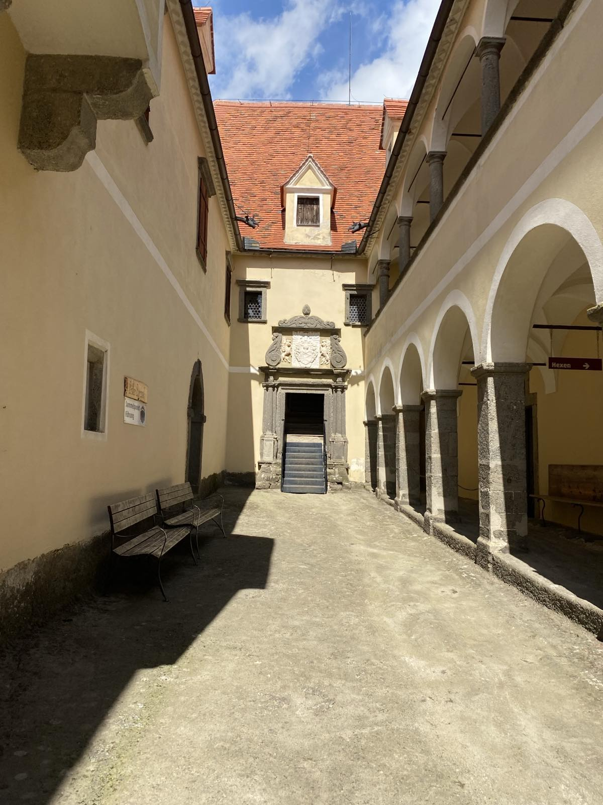
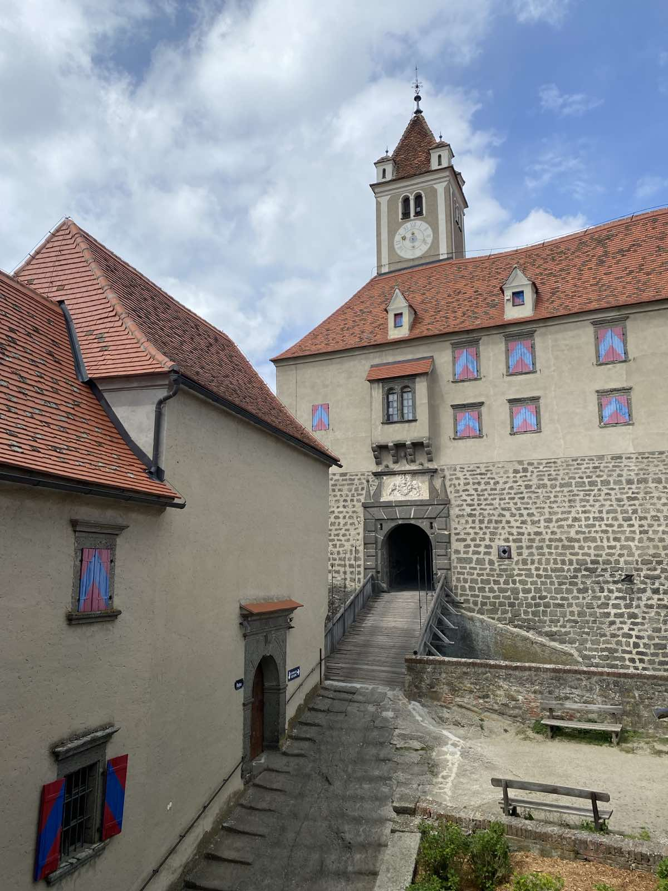
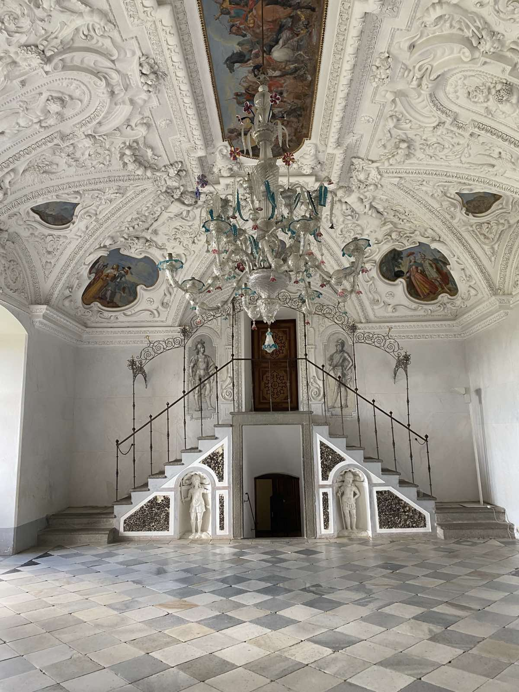

Die Burg Riegersburg zählt zu den eindrucksvollsten Festungen Österreichs. Sie thront auf einem vulkanischen Basaltfelsen im Osten der Steiermark. Erstmals im 12. Jahrhundert erwähnt, erhielt sie ihr heutiges Erscheinungsbild im 17. Jahrhundert als mächtige Wehranlage gegen die Osmanen.
Mit sieben Toren, zwei Ringmauern und über 100 Räumen gilt sie als eine der bestbefestigten Burgen Mitteleuropas.


Heute beherbergt die Burg mehrere Museen – unter anderem Ausstellungen zu Hexenverfolgungen in der Steiermark, Waffenkunde und dem adeligen Leben.
